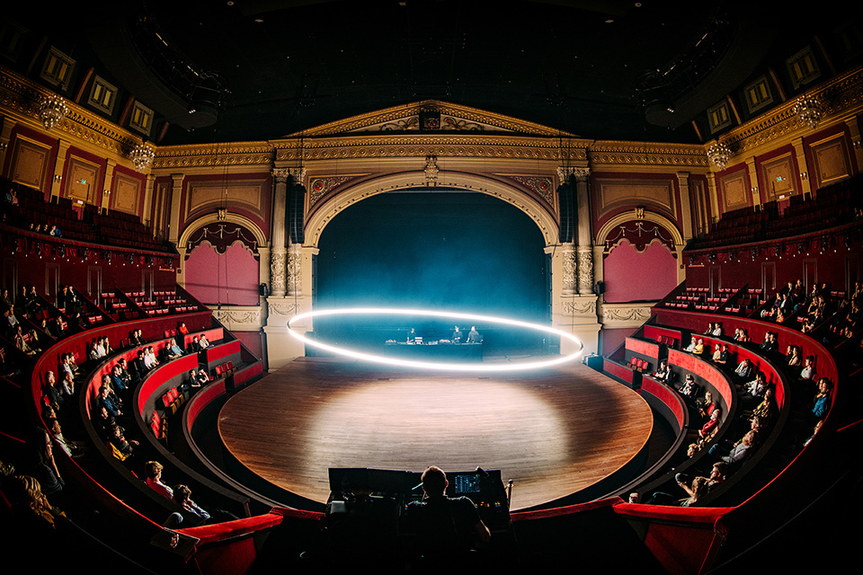

Within Without I & II
Nick Verstand, 2021
The Within Without software is a custom application built on NAP Framework that animates, controls and pre-visualizes about 9000 LEDs embedded in a large steel ring at 1000Hz. It was commissioned by Nick Verstand for his audiovisual gesamtkunstwerk 'Within Without', performed at Royal Theater Carré. The show received critical acclaim, and an even more ambitious evolution of the work was performed in 2022. The light ring continued to appear at the VMA's and Awakenings ADE.
My contribution to this project was designing and building the control application, comprising the following:
- A set of pre-programmed parameterized light effects
- A flexible effect-composition system to layer said effects
- A customizable OSC interface to control effect parameters from external software (i.e. Ableton Live)
- 3D pre-visualization of the light ring
- A mapping tool for addressing the correct microcontrollers on the ring
I wrote a technical blog post about the sofware of this project: - The Software Powering Within Without's Light Ring
Artwork: Nick Verstand
Software: NAP Labs

The light right at Awakenings ADE 2021

Within Without at Royal Theater Carré Amsterdam

Within Without at Royal Theater Carré Amsterdam, Photo: Nathan Reinds
The light ring at the 2021 MTV VMAs